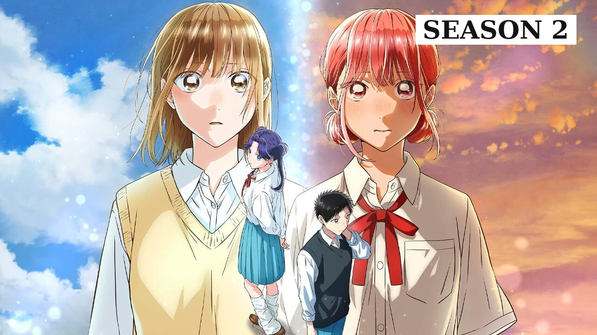
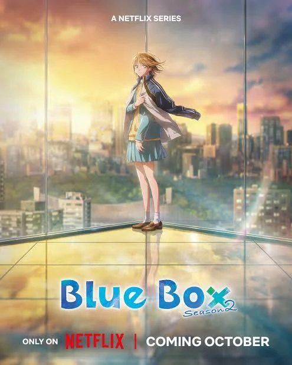
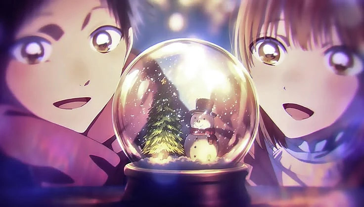
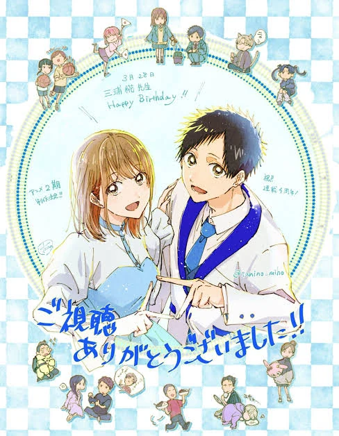

Blue Box Season 2: Complete Episode Guide (Airing Now, 2026)

Last updated: 25 October 2026
Blue Box Season 2 premiered on 4 October 2026 and is airing weekly. It picks up exactly where the first season left off, with twelve episodes planned, a new director at the helm and a brand-new studio behind the animation. This guide covers everything about the season: the production changes, the new characters, the arc it is adapting, and an episode-by-episode breakdown as it airs.
Because the season is still running, this page is written to stay accurate rather than speculative. Episodes are covered in full once they have aired, and upcoming episodes are listed by date only.
At a glance
- Episodes: 12 (planned)
- Premiere: 4 October 2026
- Broadcast: TBS and 28 affiliated stations, Sundays at 16:30 JST
- Streaming: Netflix, worldwide, shortly after broadcast
- Director: Daisuke Sako (replacing Yuichiro Yano)
- Animation: Electric Circus (replacing Telecom Animation Film)
- Opening theme: “Anata no Hana no Iro” by Aiko
- Ending theme: “Blue In” by elsewhere kikou
- New cast: Yoshino Aoyama as Yumeka Kido
Where Season 2 picks up
The first season ended with Taiki finally asking Chinatsu out, breaking a pattern of careful silences that had lasted twenty-five episodes. Season 2 does not reset that. It starts from the assumption that the two of them have acknowledged something, and it spends its opening episode showing how ordinary and how loaded that can feel at the same time. The outing at the sports shop, the cafe, the rooftop sunset — none of it is dramatic, and all of it matters, because the show is now writing from a different emotional starting point.
What Season 2 does with that is introduce two new pressures. The first is Kazuma Matsuoka, a confident basketball player back from America who tells Taiki plainly that he has no place pursuing Chinatsu. The second, and the bigger one, is Yumeka Kido: a former teammate and once-close friend of Chinatsu's who believes Chinatsu has thrown away her basketball career for a boy. Neither is a traditional love rival. Both are tests of whether the thing Taiki and Chinatsu built in Season 1 can survive contact with the outside world.
New studio, new director: what changed
The biggest behind-the-scenes change between seasons is the animation team. Season 1 was directed by Yuichiro Yano and animated by Telecom Animation Film, with Miho Tanino as chief animation director and character designer. Season 2 hands directing duties to Daisuke Sako and animation production to Electric Circus.
Studio changes in anime are always worth paying attention to, and this one is meaningful for two reasons. First, it is rare for a successful series to switch animation studios between seasons; the fact that it happened here means the production committee had a reason, and the most common one is scheduling. Season 1 aired in two consecutive cours and ended in March 2025, while Season 2 arrived in October 2026 — an eighteen-month gap. Second, Electric Circus is a younger studio, and a change of house almost always produces a visible shift in how a show moves.
What has not changed is the thing that mattered most. Miho Tanino remains as character designer and chief animation director, and the character work in the first three episodes is immediately recognisable as the same show. The faces, the small physical details of two people being nervous near each other, the restraint in the direction — all of it survives the studio change intact. If anything, Season 2 is slightly more confident in its framing, and the rooftop scene in episode one is composed with a stillness Season 1 rarely reached.
Who is new in Season 2
Yumeka Kido, voiced by Yoshino Aoyama, is the most important addition to the cast. She is a former basketball teammate of Chinatsu's and, before that, her closest friend and the person she most wanted to catch up to. Yumeka is not written as a rival to be defeated. She is written as someone whose relationship with the sport collapsed, and who cannot stand watching someone she admires keep going. The season uses her to interrogate the thing Blue Box has always been about: what it costs to be the person who refuses to give up.
Kazuma Matsuoka is the other new arrival, a popular Eimei student and basketball player who has returned from America. He is the season's most conventional source of tension and the show knows it, which is why it uses him primarily as a mirror rather than a threat. Matsuoka is what Taiki might look like if he were confident instead of stubborn, and the fact that he tells Taiki the truth about the gap in their abilities makes him more interesting than a simple antagonist would be.
Music: the new opening and ending
Season 2 opens with “Anata no Hana no Iro” by Aiko, and closes with “Blue In” by elsewhere kikou. The shift in musical identity is deliberate and matches the season's change of mood. Season 1's first cours used Official Hige Dandism and Eve, and its second cours moved to Macaroni Empitsu and Tomoo, so the show has always treated each block as its own chapter. Season 2's pair is warmer and slightly more wistful, which fits a story that has stopped being about whether two people will notice each other and started being about what happens next.
Season 2 episode guide (as it airs)
The guide below covers every episode that has aired. Upcoming episodes are listed by date in the schedule further down.
Episode 1 (Season 2, Episode 1) — Déjà Vu
Season 2 opens on an outing, and it opens deliberately quietly. Taiki and Chinatsu are at a sports shop together, and the show takes its time with how much that ordinary afternoon means to him. There is no crisis, no dramatic music, no confession hanging in the air. It is just two people who live in the same house choosing to spend a free day in the same place, and Taiki is visibly, almost painfully happy about how casual it is. After a full season of careful near-misses, the series is letting the audience feel how far these two have come simply by letting them be comfortable.
Then the outing gets a third wheel. At a cafe they run into Kazuma Matsuoka, a popular Eimei student and basketball player who has just returned from America. Matsuoka is confident, socially fluent and immediately interested in Chinatsu, and he slots himself into the conversation without being invited. Taiki is annoyed in the specific, teenage way of someone who cannot say why he is annoyed, and the show plays the awkwardness for exactly what it is rather than inflating it into a rivalry yet.
Matsuoka also does something much sharper than simply intruding. Privately, he tells Taiki that he has no real place pursuing anything romantic with Chinatsu given how far behind his badminton is. It is a cruel line, and the show is careful about how it lands: Matsuoka is not a cartoon villain, he is a confident athlete stating what he genuinely believes about the gap between them. It is the first time in the series that someone has said out loud what Taiki has been quietly afraid of since episode one, and it hits hard precisely because it is not entirely wrong.
The episode then makes a choice that defines the season's tone. Rather than fighting Matsuoka, Taiki encourages Chinatsu to go and watch a college basketball game with him, because it would be good experience for her. It is the most mature thing he has done in the entire series, and it costs him. Chinatsu goes, then comes back to him, having changed her mind, and the two of them end up watching the sunset from a rooftop deck.
That scene is the heart of the premiere. Chinatsu points out how much the outing resembles the first time they properly met, which is the show deliberately drawing a line between the beginning of Season 1 and the beginning of Season 2. Then she tells him something he has never known: she had already noticed him as a hardworking person before they ever spoke. For twenty-five episodes the audience has understood that Taiki noticed Chinatsu first. Here the series quietly reveals that it was mutual, and earlier than he realised.
Which is, of course, exactly when Taiki tries to confess. The moment builds, the show leans into it, and then it is interrupted by Chinatsu's former basketball teammate, Yumeka Kido. Yumeka does not merely walk in. She mocks Chinatsu for giving up basketball and the nationals to pursue romance, and the accusation lands like a slap. The season's central conflict arrives in its final seconds: not a rival for Taiki's affection, but a rival for Chinatsu's sense of who she is supposed to be.

Episode 2 (Season 2, Episode 2) — Admiration
Yumeka leaves, and the episode spends its opening letting Taiki process what he just heard. He remembers Yumeka from middle school, where he saw her play with the basketball team, and the memory gives her a weight the audience did not have before. Whatever is going on between her and Chinatsu, it is not new, and it is not small. Taiki, being Taiki, responds to this by reassuring Chinatsu that she is capable of reaching the nationals. It is the right thing to say and the wrong thing to lead with, and the episode knows it.
The season then settles into its structure: both clubs begin training for the upcoming matches, including the Christmas training period, and Blue Box gives the badminton and basketball enough room that neither feels like a side plot. This is one of the things Season 2 does better than Season 1, and it is worth noting early. The first season often used the sports as a language for the romance. The second season is more willing to let the sports exist as sports, with their own pacing and their own stakes, and then let the romance happen inside them.
The episode's real work is Yumeka. Taiki learns from Haryu that Chinatsu holds a deep admiration for Yumeka, that the two of them were once long-time friends, and that the relationship mattered enormously to Chinatsu. Then he runs into Yumeka again, this time at a dental clinic, and the friction between them is immediately obvious. Yumeka tells him plainly that she hates Chinatsu, and that she became bored with basketball. The statement is so blunt that Taiki does not know what to do with it, and the show leaves him there, wondering what happened to a friendship that clearly meant something.
So he asks. During an evening walk, Taiki asks Chinatsu about her past with Yumeka, and the episode gives the audience the flashback the season has been building toward. Chinatsu explains that in elementary school she wanted to reach Yumeka's level, that Yumeka tutored her and helped her improve her form, and that this made their peers resentful. The two of them kept playing as a unit into middle school, until Yumeka quit, citing frustration that Chinatsu relied on her too much. It is a simple story and a devastating one: Chinatsu's entire competitive drive traces back to a person who eventually found that drive exhausting.
The episode closes on the confrontation the premiere promised. Taiki finds Yumeka playing basketball, and Yumeka insists there is no value in pouring yourself into a sport when you lose constantly. Taiki, who has spent the entire series losing and continuing anyway, tells her she wasted her talent because she was afraid of failing. It is the sharpest thing he has ever said to anyone, and it is not entirely fair. Yumeka slaps him and tells him he does not understand, and the show does not let him be right. It lets him be hurt, and it lets her be hurt, and it lets both of them be partly correct.
Episode 3 (Season 2, Episode 3) — They're One and the Same
The third episode opens with Yumeka blurting out something that cuts against everything she said the week before: if Chinatsu still aims for the nationals, she should not be faltering in practice. It is a strange, contradictory thing for someone who claims to hate Chinatsu to say, and Taiki notices. The show is beginning to reveal that Yumeka's hostility is not the whole picture, and it is doing it slowly, which is the right pace.
Back at school, Taiki watches Chinatsu practise with her team for the Winter Cup, and the episode gives us a complication that Season 1 only hinted at: Hina is still avoiding him. The two threads run alongside each other through the whole episode, and the show is careful not to let one swallow the other. Hina's distance is not a subplot here, it is a consequence, and it is treated with the seriousness it has earned.
Then the basketball team has a bad practice, and it is the best scene of the season so far. One of Chinatsu's teammates snaps at her out of stress, accusing her of forcing the rest of the team to adapt to her level of skill. It is unfair and it is also, from the teammate's side, understandable, and the show does not pick a winner. What matters is what it does to Chinatsu. The accusation lands directly on her oldest wound: she has been the person who works harder than everyone else since she was a child, and she has been reminded, again, of the cost of that. She remembers sacrificing rest for nonstop practice to catch up to Yumeka, and the pattern is suddenly visible to her.
So she asks Taiki something unexpected: what if she skipped practice? It is a question that sounds small and is enormous, because Chinatsu has never once considered it. Taiki is thrown by it, and the episode uses his reaction to show how much he has grown too. A year ago he would have panicked. Here he simply wonders, out loud, whether she has ever let herself consider it. It is the kind of conversation the show does better than almost anything else: two careful people admitting that the way they have been living might not be sustainable.
Meanwhile, the Taiki-Matsuoka tension escalates in a way that is very Blue Box. Both of them want an extra ticket to Chinatsu's Winter Cup game, and rather than settling it with a fight, they settle it with a shuttle run. The show plays the absurdity straight, and it works, because it is exactly what two competitive teenage athletes would do. Matsuoka uses the moment to dare Taiki to give up on pursuing Chinatsu, and Taiki does not answer, which is itself an answer.
The episode's closing scene belongs to Chinatsu and Yumeka, and it is the most important scene of the season so far. They meet again at the clinic, and Yumeka finally says the thing that explains her. She reveals that she secretly admired Chinatsu's determination, and that she was offended watching Chinatsu waste that determination by hanging out with Taiki. It is a confession dressed as an insult, and it reframes the entire conflict: Yumeka does not hate Chinatsu, she hates what she thinks Chinatsu has given up. Chinatsu does not accept the framing. She tells Yumeka plainly that Taiki has become her source of strength in reaching her goals. It is the first time she has said anything like that out loud to anyone, and the episode ends on it.

Episode 4 (Season 2, Episode 4) — Love is the Most Powerful Feeling
The fourth episode aired on 25 October 2026, and it is the point at which this guide currently ends. Its title, “Love is the Most Powerful Feeling”, signals that the season is moving from setup into the emotional payoff of the Yumeka arc, following directly on from Chinatsu's declaration that Taiki is her source of strength. This section will be updated with a full recap once the episode has been widely seen, so that the guide stays accurate rather than speculative.
What can be said now is structural. The first three episodes did the work of establishing Season 2's two engines: Yumeka's resentment of Chinatsu, and Matsuoka's challenge to Taiki. Both are now in position, and both are pointed at the Winter Cup. Episode four is where the show typically starts converting that setup into consequence, and given the title, the smart money is on the Yumeka arc reaching its first real turning point.
Season 2 release schedule
Season 2 airs on Sundays. In India, episodes land at roughly 1:00 PM IST on Netflix, shortly after the Japanese broadcast.
| Ep | Title | Date | Status |
|---|---|---|---|
| 1 | Déjà Vu | 4 October 2026 | Aired |
| 2 | Admiration | 11 October 2026 | Aired |
| 3 | They're One and the Same | 18 October 2026 | Aired |
| 4 | Love is the Most Powerful Feeling | 25 October 2026 | Aired |
| 5 | TBA | 1 November 2026 | Upcoming |
| 6 | TBA | 8 November 2026 | Upcoming |
| 7 | TBA | 15 November 2026 | Upcoming |
| 8 | TBA | 22 November 2026 | Upcoming |
| 9 | TBA | 29 November 2026 | Upcoming |
| 10 | TBA | 6 December 2026 | Upcoming |
| 11 | TBA | 13 December 2026 | Upcoming |
| 12 | TBA | 20 December 2026 | Upcoming |
Episode titles for 5–12 are not yet announced. Dates are the scheduled broadcast dates and can shift.
What Season 2 is adapting
Season 2 continues the adaptation of Kouji Miura's Blue Box manga, picking up from where the first season's twenty-five episodes ended. The arc it is built around is the one the first season spent its second half pointing at: the Winter Cup, and the return of Yumeka Kido into Chinatsu's life.
The Winter Cup matters because it is the first major tournament Chinatsu faces as a third-year, which means it is the last one she can realistically reach before graduating. Season 1 established that basketball is not a hobby for her; it is the thing she has organised her entire life around. Season 2 takes that established fact and puts pressure on it from two directions at once. The tournament itself raises the stakes of every practice. And Yumeka, who quit the sport, forces Chinatsu to defend her choice to keep going.
The Yumeka arc is the season's spine. What makes it work is that it is not a rivalry in the sports-anime sense. Yumeka is not better than Chinatsu, and the show is not interested in who would win a one-on-one. She is the person who showed Chinatsu what excellence looked like, and then walked away from it, and her hostility is really grief. Blue Box has always been strongest when it treats its characters' failures with respect, and this is the most sustained example of it in the series so far.

How Season 2 is different from Season 1
The first season was about two people trying to become worthy of each other, and almost all of its tension was internal. Taiki hid his feelings out of respect. Chinatsu treated hers as a complication to be managed. The whole thing ran on careful silences and small gestures, and it worked because the show trusted the audience to read a scarf or a bracelet correctly.
Season 2 keeps that language but changes what it is pointed at. The conflict is no longer inside the two of them; it has moved outside. Matsuoka says the quiet part out loud. Yumeka attacks the premise of Chinatsu's life. Both of them force Taiki and Chinatsu to defend something they had never had to defend before, and the season is noticeably more willing to let them argue. It is a natural progression for a romance that has already crossed its first threshold, and it is the right one: a second season that simply repeated the first season's pattern would feel like stalling.
The sports have also been given more room. Season 1 often used badminton and basketball as a language for the romance. Season 2 is happier to let the matches exist on their own terms, and the Winter Cup setup gives the basketball side a genuine competitive structure to sit inside.
Season 1 in review: everything you need to remember
Season 2 assumes you remember Season 1, and it rewards you for it. Here is the whole first season compressed into what actually matters.
The setup. Taiki Inomata is a first-year badminton player who gets to the gym early every morning to watch Chinatsu Kano, the second-year basketball ace, practise alone. He has never spoken to her. When Chinatsu's family is due to move abroad, a long friendship between their mothers means she ends up living in the Inomata house instead, and the two of them spend the entire first season hiding it from the school. Kyo Kasahara, Taiki's closest friend, is the one who insists on the secrecy, and he spends the rest of the season quietly steering events.
The goal. Rather than simply pursuing Chinatsu, Taiki sets himself a target: reach the national badminton tournament. It is a huge ask for a first-year, and the season is honest about how far away he is. He loses to Haryu in practice. He loses to Shoichiro Kishi's challenge and then wins the rematch. He loses twice at the qualifiers, to Shota Hyodo in doubles and to Shuji Yusa in singles, and the nationals slip out of reach. Chinatsu qualifies in basketball. The gap between them, which the show has been quietly measuring all season, becomes concrete.
The triangle. Hina Chono is Taiki's friend and a gymnast, and her feelings for him arrive slowly and are the most honestly written thing in the show. She works out what she feels long before Taiki does, she never tries to win by making anyone else lose, and she is carrying real competitive pressure of her own. Kyo notices her feelings before she admits them. By the fireworks festival she has taken a real step and invited Taiki out, and by the training camp in the final episodes she has had the confrontation the season has been building toward. Blue Box never punishes Hina for her feelings, and it never rewards her with something she has not earned, which is why her arc lands.
Chinatsu's arc. Chinatsu begins the season as the composed ace who handles everything, and the first season methodically takes that composure apart. She is the one who discourages Taiki by accident and then apologises properly. She is the one who admits that she is beginning to worry her feelings for Taiki are getting in the way of her basketball. By the time the season reaches its second cours, she has stopped pretending to herself that this is small, and her night at Karen's house is where she finally says it out loud.
The finale. Taiki, having strengthened his resolve, asks Chinatsu out. It is not a grand gesture; it is a decision. After twenty-five episodes of scarves, bracelets, notes left in notebooks and careful silences, the show resolves its central tension with one honest sentence, and it leaves the answer open enough for a second season to exist. Everything Season 2 does starts from there.
The characters of Blue Box, explained
Taiki Inomata is a protagonist defined by effort rather than talent, and the show is unusually honest about the cost of that. He is not a genius who has not been discovered. He is a first-year who is genuinely behind his seniors, who loses repeatedly, and who keeps going anyway. His defining trait is not stubbornness for its own sake; it is that he refuses to let the gap between where he is and where he wants to be stop him from closing it. Season 2 tests that trait directly, because Matsuoka says out loud what Taiki has been quietly afraid of, and Yumeka challenges the premise that effort is worth anything at all.
Chinatsu Kano is the most complicated character in the series, and it is worth being precise about why. She is not a prize, and she is not a manic pixie dream athlete. She is a competitive person who has organised her entire life around basketball since childhood, whose drive traces back to wanting to reach someone else's level, and who is now discovering that the person she admired quit. Her arc in Season 2 is about defending a choice she has never had to defend before: that the sport is worth the cost, and that the relationships she has built around it are not a distraction from it.
Hina Chono is the character most viewers end up rooting for hardest, and the show earns that by giving her a full life outside the triangle. She is a gymnast under real pressure, she is funny, she is perceptive, and she is generous in a way that costs her. Her feelings for Taiki do not define her; they complicate a person who already had a lot going on. Season 2 continues her thread, and the fact that she is still avoiding Taiki in episode three is treated as a consequence rather than a plot device.
Kyo Kasahara is the quiet engine of the story. He is the friend who tells Taiki to keep the living situation secret, the one who arranges the aquarium outing, and the one who asks the questions nobody else will, including whether Taiki thinks Chinatsu might like him back. He is not a comic sidekick; he is the person who makes the plot move, and Blue Box is careful to give him his own perspective without ever making him a narrator.
Kengo Haryu begins the series looking like a rival and becomes something more useful: a senior who teases Taiki relentlessly and then gives him genuinely good advice. His relationship with Karen, developed properly in the second cours, functions as a portrait of what a relationship between two athletes actually looks like — affectionate, ordinary and occasionally difficult. It is the most mature relationship in the show, and it gives Taiki a picture of something to aim at that is not fantasy.
Yumeka Kido is the most important addition Season 2 makes, and she is not a rival in the conventional sense. She is the person who showed Chinatsu what excellence looked like, tutored her, played beside her, and then quit, citing frustration with how much Chinatsu relied on her. She does not hate Chinatsu; she hates watching her keep going. Her hostility is grief wearing armour, and the season treats it that way.
Badminton and basketball in Blue Box
Blue Box is often described as a romance anime with sports in it, and that framing undersells how carefully the two sports are used. Badminton and basketball are not decoration. They are the language the two leads use to talk to each other when they cannot say things directly.
Badminton is Taiki's sport, and it is the one the show uses to measure him. The series is careful to make the sport legible to newcomers: it explains the difference between singles and doubles, it shows how much of the game is footwork and stamina rather than raw power, and it gives Taiki opponents who are genuinely better than him for reasons the audience can understand. Haryu is a doubles specialist who plays with a partner's instincts. Hyodo is technically superior. Yusa is a singles player who reads Taiki's game and exploits it. Each loss teaches the audience something about the sport and something about Taiki, which is exactly how a good sports-romance should use its matches.
Basketball is Chinatsu's sport, and the show uses it differently. Where badminton is about Taiki closing a gap, basketball is about Chinatsu carrying a weight. She is the ace, which means the team's expectations rest on her, and Season 2's best basketball scene is not a match at all — it is a practice where a teammate snaps at her for forcing everyone to adapt to her level. That scene does more work than any game could, because it shows what being the best on your team actually costs.
The two sports also structure the relationship. Chinatsu's qualifiers and Taiki's qualifiers fall on the same day in Season 1, and the show uses that coincidence to braid their stories together. Season 2 goes further, setting both of them up for a Winter Cup run at the same time, and the result is a season where the sporting calendar and the emotional calendar move together.
The Blue Box manga: where the story goes
Blue Box is adapted from Kouji Miura's manga of the same name, which has been serialised in Shueisha's Weekly Shonen Jump since 2021 and remains ongoing. The anime has adapted the manga in order and at a steady pace, which means Season 2 continues directly from the point Season 1 stopped rather than jumping around.
What that means practically is that the source material is not running out. The manga has continued well past the point the first season reached, and the Winter Cup and Yumeka arcs that Season 2 is built around are among the most substantial stretches of the story. If the anime continues to be produced, there is more than enough material for a third season and beyond.
For readers deciding whether to pick up the manga, the short answer is that the anime is a faithful adaptation and you will not spoil yourself in an unpleasant way by reading ahead. The longer answer is that Blue Box's manga is unusually good at the thing the anime is best at: small, quiet scenes between two people who are trying very hard to be honest with each other. The artwork carries a lot of that on its own, and the pacing of the manga gives the emotional beats slightly more room than an anime episode can.
Blue Box and the romance genre
Blue Box arrived in a period when romance anime had split into two broad camps: fast, trope-driven shows that resolve their central tension in twelve episodes, and slow, atmospheric shows that are more interested in mood than plot. Blue Box belongs to neither, and that is the main reason it stands out.
Its pacing is genuinely slow — twenty-five episodes to reach a confession — but its structure is not. Every episode advances something, and the show is disciplined about giving each character a reason for the choices they make. The result is a romance that feels earned rather than delayed. When Taiki finally asks Chinatsu out in the Season 1 finale, it lands because the audience has watched him build the right to ask over an entire season, not because the show withheld it artificially.
The other thing Blue Box does unusually well is refuse to make its love triangle ugly. Hina is never written as an obstacle. Chinatsu is never written as a rival to Hina. The three of them are friends who happen to be in a difficult situation, and the show treats all three with equal respect. That sounds like a small thing. In practice it is rare, and it is the reason viewers who would normally skip a love triangle end up invested in this one.
Finally, Blue Box respects its sports. It never lets the badminton or basketball become a metaphor that exists only to service the romance. The matches have their own logic, the losses have their own weight, and the characters' athletic goals are treated as genuinely important rather than as something they will grow out of once the relationship resolves. For a genre that often treats a character's ambition as a phase, that respect is refreshing.
Blue Box Season 1: all 25 episodes at a glance
If you want to refresh your memory of Season 1 without rereading the full guide, here is every episode in one line.
- Chinatsu Senpai — Taiki's crush is revealed, and Chinatsu ends up moving into his house.
- You Have to Go to Nationals — Taiki sets his goal, and Haryu enters the picture.
- Chii — Taiki misreads Haryu completely, loses to him, and learns the nickname.
- If He Wins — Chinatsu accidentally discourages him, and Kishi challenges Haryu.
- Aquarium — Taiki wins, goes on the aquarium outing, and Hina sees something she cannot unsee.
- Wish Me Luck — Hina confronts them, sprains her ankle, and takes first place.
- Can I Have One? — Shrine visit, qualifiers approaching, and a shared snack.
- Score! — Taiki loses twice at the qualifiers; Chinatsu writes in his notebook.
- I'll Be Rooting For You — Taiki overworks himself sick, and Chinatsu shows up.
- It's Not a Good Thing — Haryu gives advice; Chinatsu questions what the relationship costs her.
- Uncool! — Hina invites Taiki to the fireworks festival.
- Girls... — The festival, and Hina's real step.
- I Want a Back-and-Forth Rally — The second cours opens at the nationals; Karen and Haryu deepen.
- What's the Connection? — Chinatsu competes; Hina keeps Taiki company.
- August 26 — Chinatsu's birthday, a ruined plan, and a better evening anyway.
- Unfair Woman — Chinatsu admits to herself what Taiki has become.
- Of Course I Want to See It — The Sajikawa practice match approaches.
- I Know — The match, and Chinatsu acknowledging how far Taiki has come.
- I've Got Plans — The school festival, and an invitation that goes the other way.
- As One of Her Closest Friends — Taiki plays the prince; Chinatsu frames herself as a friend.
- A Chance to Blossom — Rumours swirl; Chinatsu tells Karen the truth.
- Inota! — Ayame decides to help Hina, and the training camp begins.
- Spinning — Taiki is forced to think honestly about both of them.
- A Roller Coaster — Hina and Taiki get their night alone.
- Even So — The aftermath, and Taiki finally asks Chinatsu out.
Blue Box voice cast
Taiki Inomata is voiced by Shoya Chiba, and Chinatsu Kano by Reina Ueda. Hina Chono is voiced by Akari Kito, Kyo Kasahara by Chiaki Kobayashi, and Kengo Haryu by Yuma Uchida. Ayame Moriya is voiced by Shiori Izawa and Karen by Yuna Ogura. In Season 2, Yumeka Kido is voiced by Yoshino Aoyama, who joined the cast for the new season. The Japanese voice work is one of the show's quiet strengths: Blue Box is a series built on tone and hesitation, and the performances carry a great deal of the emotional information that the dialogue deliberately leaves out.
What to expect in the rest of Season 2
With twelve episodes planned and the season running to 20 December 2026, there is still a lot of ground to cover. Based on where the first three episodes have positioned things, there are three threads to watch.
The Winter Cup. Chinatsu's tournament is the season's structural backbone. The first three episodes establish her training, the friction inside her team, and the pressure she is under as the ace. The tournament itself is where that pressure gets tested, and given how much Season 1 built up her relationship with the sport, this is the thread most likely to produce the season's biggest emotional payoff.
Yumeka's arc. Yumeka has moved from hostility to something more complicated in the space of two episodes. Her admission that she secretly admired Chinatsu's determination, and that she was offended watching her “waste” it, reframes her entirely. The natural next step is a resolution between the two of them — not a reconciliation necessarily, but an understanding. Blue Box has never been interested in villains, and Yumeka is written as someone who needs to make peace with her own decision to quit.
Taiki and Matsuoka. Matsuoka's challenge is the season's most conventional thread, and the show has been smart about keeping it secondary. The question is not whether Taiki will “beat” Matsuoka, but whether he will let someone else's assessment of his worth change how he behaves. Given that Taiki's whole character is built on refusing to be defined by the gap between him and better players, the answer is probably no — but watching him get there is the point.
Blue Box's themes, in depth
Effort as identity. Blue Box is fundamentally about people who define themselves by how hard they try, and it is honest about the cost. Taiki trains until he is sick. Chinatsu sacrifices rest to keep up. Hina pushes through injury. The show never presents this as purely noble. It presents it as a way of living that produces results and also produces damage, and it lets its characters grapple with whether the trade is worth it.
The gap between wanting and being ready. Most of Season 1's tension comes from the fact that Taiki wants something he does not feel entitled to yet. Season 2 moves the tension outward, but the underlying theme remains: the show is far more interested in the process of becoming ready than in the moment of arrival. That is why its confession lands so well, and it is why a second season is worth having at all.
What admiration does to a friendship. The Yumeka arc is the clearest expression of this theme the series has attempted. Chinatsu admired Yumeka so completely that she organised her life around catching up. Yumeka found that admiration exhausting and quit. The result is two people who cared about each other enormously and cannot be in the same room. Blue Box treats this with real seriousness, and it is the most mature material in the franchise.
Care versus honesty. The show's quietest recurring idea is that being careful with someone is not always kind. Taiki hides his feelings out of respect and ends up avoiding a conversation. Chinatsu frames herself as a friend to protect herself and ends up lying to nobody but herself. Season 1 resolves this with a confession. Season 2 is about what happens after the careful people finally stop being careful, and discover that honesty comes with its own problems.
Blue Box and its love triangle
Love triangles are the most disliked structure in romance anime, and the reason is almost always the same: they require a character to exist purely as an obstacle, and audiences can feel it. Blue Box avoids that failure through a simple but disciplined choice. Every character in its triangle is given a life, a goal and a perspective that exists independently of the main couple, and the show never lets one of them become a plot device.
Hina is the clearest beneficiary of this. She is a gymnast with real competitive pressure, a friend group of her own, and a personality that does not revolve around Taiki. Her feelings for him arrive as a complication to an already full life rather than as the definition of it. When she loses, the show does not punish her or reward her; it lets her be understood, which is what she actually needs. That is a genuinely rare way to treat a losing love interest, and it is why viewers who would normally skip a love triangle end up invested in this one.
Chinatsu gets the same treatment from the other side. She is not written as the “winning” option. She is written as a person with a goal that predates Taiki and will outlast him if the relationship fails, and the show is honest that her feelings for him are in tension with that goal rather than a solution to it. Season 2 leans into this hard, which is exactly what a second season should do.
More common questions
Is Blue Box Season 2 worth watching if I have not seen Season 1? Not really. Season 2 opens mid-relationship and every scene assumes you know the history. Watch Season 1 first; the full episode guide is linked at the end of this article.
What time do new episodes come out? Sundays at 16:30 JST on TBS, which is roughly 1:00 PM IST. Netflix adds each episode shortly after the Japanese broadcast.
Will Season 2 cover the Winter Cup completely? Twelve episodes is a tight runway, so it may not cover the entire tournament. The season is more likely to take the Winter Cup through its first major matches while resolving the Yumeka arc, which is the emotional core of this stretch of the story.
Is the animation worse after the studio change? No. The first three episodes are consistent with Season 1, and in a few places — particularly the rooftop scene in episode one — the composition is stronger. The character design and chief animation direction are unchanged, which is why the show looks like itself.
How does Season 2 compare to Season 1 so far? It is more focused. Season 1 had twenty-five episodes to establish four main characters and a premise. Season 2 has twelve episodes and an audience that already knows everyone, so it can spend its time on conflict rather than setup. Three episodes in, it is using that advantage well.
Blue Box Season 2's story arc, explained
Season 2 is structured around a single question that the first season spent twenty-five episodes setting up: can Chinatsu keep being the person who refuses to give up? The season answers it through three interlocking threads, and understanding how they connect makes the pacing much easier to follow.
Thread one: the Winter Cup. Chinatsu is now a third-year, which means this is her last realistic shot at a major national tournament before graduating. Season 1 established that she missed the nationals once already and that the experience shaped her. Season 2 raises the stakes by making this attempt the one that counts, and it builds the pressure gradually: first the training, then the internal team friction, then the tournament itself.
Thread two: Yumeka Kido. Yumeka is the person Chinatsu built her ambition around, and she quit. Her return forces Chinatsu to defend the thing she has organised her life around, and it does so from an angle that is genuinely uncomfortable. Yumeka is not saying Chinatsu is bad at basketball. She is saying that caring this much about a sport that will eventually end is a mistake, and she has the credibility to say it because she made the opposite choice.
Thread three: Matsuoka and Taiki. The third thread is the smallest and the most conventional, and the show knows it. Matsuoka is a confident athlete who tells Taiki he has no business pursuing Chinatsu. The thread exists to test whether Taiki's identity — the person who closes gaps through effort rather than talent — survives being told, out loud, that the gap is too large.
What ties the three together is the theme the whole franchise runs on: the difference between wanting something and being willing to pay for it. Chinatsu has to decide whether the Winter Cup is worth the cost. Yumeka decided it was not. Taiki has to decide whether the pursuit is worth the losses. Season 2 is where all three of those decisions come due at once, and the reason it works is that none of them has an obviously correct answer.
The Winter Cup, explained
Chinatsu's goal in Season 2 is the Winter Cup, which is the common name for the All Japan High School Basketball Championship, the national tournament held each December for Japanese high school teams. It is the biggest stage in the sport at that level, and for a third-year student it is the last one they can play in before graduating.
That deadline is what gives Season 2 its weight. In Season 1, Chinatsu's basketball existed mostly as context for who she is; the show used her practices and qualifiers to establish her character rather than to build a competitive plot. Season 2 changes that. Because the Winter Cup is the final opportunity, every training session and every team conflict now carries a clock. The show does not have to say the stakes out loud, because the audience already knows what a third-year's last tournament means.
Blue Box also uses the tournament structure to do something the first season could not: it makes the basketball team a genuine ensemble. Season 1's basketball scenes were mostly Chinatsu alone or Chinatsu with one teammate. Season 2's are team scenes, with the friction, hierarchy and mutual dependence that come with a real squad. The episode-three practice where a teammate snaps at Chinatsu is the clearest example, and it is the kind of scene that only works once a show has committed to treating the sport seriously.
Season 2's opening and ending, analysed
Season 2 opens with “Anata no Hana no Iro” by Aiko and closes with “Blue In” by elsewhere kikou, and the pair says a lot about where the season intends to go.
Aiko is one of the most recognisable names in Japanese pop, with a career stretching back decades, and her involvement signals a series that has earned the confidence of the industry. The opening's warmth and slight melancholy fit a season that has stopped asking whether two people will notice each other and started asking what happens once they have. Season 1's openings were about the thrill of the beginning. Season 2's is about the difficulty of continuing.
The ending, “Blue In”, is the more interesting of the two. Blue Box has always used its ending themes as the show's quietest space, and Season 1's closers were where the season let its guard down. “Blue In” continues that tradition, and the change in musical identity from Season 1's second cours is deliberate. The show treats each block of episodes as its own chapter with its own sound, and the result is that the music itself marks the passage of the story.
What the first three episodes changed
Three episodes is not a lot, but it is enough to see what Season 2 is doing differently, and it is worth being precise about it.
The camera got quieter. Season 1 was a well-directed show, but it was also a busier one. It used movement, reaction shots and comic timing to carry its scenes. Season 2's first episode ends on a rooftop sunset that the show simply holds, without cutting away or underlining it, and it trusts the audience to feel the weight of what Chinatsu says there. That is a more confident piece of direction than anything Season 1 attempted, and it is the clearest sign of the change in creative leadership.
The conflict moved outside. Season 1's tension was almost entirely internal: two careful people refusing to say what they felt. Season 2 introduces characters who say the quiet part out loud. Matsuoka tells Taiki he is not good enough. Yumeka tells Chinatsu she has wasted her talent. Both statements are cruel and both are, from a certain angle, defensible, and that is what makes them work. The show has moved from a story about hesitation to a story about being challenged.
The sports got more room. Season 1 often used badminton and basketball as a language for the romance, which was effective but limited the sports to metaphor. Season 2 is happier to let a practice scene be a practice scene. The basketball team's internal friction in episode three has no romantic content at all; it exists to show what being the ace actually costs. That is a real expansion of what the show is willing to do.
What has not changed is the thing that matters most. Blue Box is still a series about small, careful moments between people who are trying very hard to be honest with each other, and Season 2 has kept that intact through a change of studio, director and musical identity. Three episodes in, it is the most impressive thing about the season.
Season 2's key scenes, moment by moment
Blue Box is a show that lives in its individual scenes, and Season 2's first three episodes contain several that are worth pulling apart on their own.
The rooftop sunset (episode 1). This is the scene the whole season is built on. Taiki and Chinatsu have spent an afternoon together, Matsuoka has intruded and been dismissed, and Chinatsu has chosen to come back. The show does not reward that choice with a confession. Instead it gives the two of them a quiet stretch of sky and one piece of information: Chinatsu had already noticed Taiki as someone who works hard, before they ever spoke. The scene is composed with almost no movement, which is unusual for this series, and the stillness is what makes it land. Everything the audience believed about the beginning of this relationship — that Taiki noticed her first — is quietly corrected.
The interrupted confession (episode 1). Immediately after, Taiki tries to say it, and Yumeka walks in. It is a deliberate anticlimax, and the show knows exactly what it is doing. A confession here would have resolved the season's tension before the season began. Instead the interruption introduces the actual conflict, and Yumeka's accusation — that Chinatsu gave up basketball and the nationals for romance — is aimed not at Taiki but at the thing Chinatsu has built her identity around. It is a much more interesting way to open a season than a confession would have been.
The dental clinic (episode 2). Taiki's second encounter with Yumeka is the season's best-written scene, and it is almost entirely dialogue. Yumeka tells him she hates Chinatsu and that she became bored with basketball, and the bluntness of it is the point. She is not performing hostility; she is stating a fact she has made peace with. The scene works because Taiki has no answer for it, and the show lets him sit in that. He is a character defined by refusing to give up, and he has just met someone who did, and she is not obviously wrong.
The practice-room snap (episode 3). This is the season's best scene that has nothing to do with romance. A teammate, under pressure, accuses Chinatsu of forcing the rest of the team to adapt to her level. It is unfair, and it is also understandable, and Blue Box refuses to pick a side. What the scene achieves is something Season 1 could not: it makes Chinatsu's excellence a burden rather than an asset, and it shows the audience the price of being the best player on a team that cannot keep up. Chinatsu's memory of sacrificing rest to catch up to Yumeka slots in beside it, and suddenly her entire life's pattern is visible to her at once.
The clinic, again (episode 3). The season closes its third episode on Chinatsu and Yumeka, and Yumeka finally explains herself. She admired Chinatsu's determination. She was offended watching her waste it. It is a confession dressed as an insult, and it reframes the whole conflict. Chinatsu does not accept the framing; she tells Yumeka that Taiki has become her source of strength. It is the first time she has said anything like that out loud to anyone, and the show ends the episode on it rather than following it up, which is the right choice. Some statements need to sit.
Blue Box's release history and how we got here
Blue Box has moved fast for a series of its size, and the timeline explains a lot about the shape of the anime.
Kouji Miura's manga began serialisation in Shueisha's Weekly Shonen Jump in 2021 and quickly became one of the magazine's most popular ongoing romances. The anime adaptation was announced in November 2023, planned and produced by TMS Entertainment with animation production by Telecom Animation Film, directed by Yuichiro Yano. The first season premiered on 3 October 2024 on TBS and its affiliates, with Netflix streaming worldwide, and ran for two consecutive cours through 27 March 2025 — twenty-five episodes in total.
A second season was announced immediately after the Season 1 finale aired, which is unusually fast and a clear sign of confidence from the production committee. It then took about eighteen months to arrive, premiering on 4 October 2026, with Daisuke Sako taking over as director and Electric Circus handling animation. Twelve episodes are planned, running weekly to 20 December 2026.
The gap matters for two reasons. First, it is long enough that a studio change was necessary rather than a choice, which explains the shift from Telecom Animation Film to Electric Circus without any suggestion of trouble behind the scenes. Second, it gave the manga time to build up enough material for a full season and beyond, which is why the anime has been able to adapt the story in order without padding or filler.
Where to watch Blue Box Season 2
Season 2 airs in Japan on TBS and twenty-eight affiliated stations, Sundays at 16:30 JST. Internationally, it streams on Netflix, with each episode added shortly after the Japanese broadcast — for viewers in India, that works out to roughly 1:00 PM IST on Sundays.
Season 1 is also on Netflix worldwide, in both cours, so a full catch-up is straightforward. If you prefer physical media, Toho Animation released Season 1 across six Blu-ray and DVD volumes through 2025, and Season 2's first home-video volume is scheduled for January 2027, covering episodes 26 to 29.
One practical note for anyone catching up: Blue Box is a show that rewards watching in order and without skipping. The seasons build on each other directly, and Season 2's opening scene only carries its weight if you have seen how the first season ended.
What to watch for in episodes 5 to 12
With eight episodes still to air, here are the things worth keeping an eye on as the season plays out. None of this is a prediction of plot; it is a list of the threads the first three episodes have deliberately left open.
Whether Chinatsu gets to be selfish. Chinatsu's arc has always been about other people's expectations. She is the ace, the teammate who works harder than everyone else, the friend Yumeka relied on and then resented. Season 2 has given her one thing Season 1 never did: a teammate who tells her, to her face, that her excellence is inconvenient. The interesting question is not whether she wins the Winter Cup. It is whether she allows herself to want it for her own reasons rather than out of obligation.
Whether Yumeka gets an ending, not a defeat. Blue Box does not write villains, and Yumeka is not one. She is someone who made a decision — to quit a sport she was good at — and who cannot stand watching the person she mentored keep going. Her arc needs to resolve in understanding rather than in a loss. If the season gives her a scene where she admits what she actually feels, rather than one where she is proven wrong, it will have handled the best character it has introduced since Hina.
Whether Taiki answers Matsuoka. Matsuoka's challenge has been kept deliberately small. He is not a rival for Chinatsu's affection so much as a mirror for Taiki's insecurity, and the season has been smart not to inflate him. The moment to watch for is the one where Taiki, having been told he is not good enough, simply carries on — because that refusal is the whole character, and it is more satisfying than any win would be.
How Hina's thread resolves. Hina has been avoiding Taiki since the end of Season 1, and the show has treated that distance as a consequence rather than a plot device. Season 2 has to eventually put the two of them back in a room together, and how it handles that conversation will say a lot about whether the show can keep its promise to treat its losing love interest with the same respect it treats its leads.
Whether the season has room to breathe. This is the real risk. Twelve episodes is a tight runway for the Winter Cup, the Yumeka arc and the Matsuoka thread, and Blue Box's greatest strength has always been its patience. If Season 2 has to rush one of its threads, the most likely casualty is the sports. The first three episodes have managed their time well; the question is whether that holds once the tournament starts.
Blue Box Season 2 in short
If you only take one thing from this guide, take this: Season 2 is not a repeat of Season 1 with new characters. It is a deliberate change of shape. The first season was about two people becoming worthy of each other, and almost all of its tension was internal. The second season keeps the same careful, small-scale writing but points it outward, introducing people who say the quiet parts out loud and forcing Taiki and Chinatsu to defend things they had never had to defend before.
Three episodes in, it is working. The studio change is invisible where it matters, the new characters are genuinely interesting rather than obstacles, and the Yumeka arc is the most emotionally sophisticated material Blue Box has attempted. If the remaining eight episodes hold that level, Season 2 will be remembered as the point where a very good romance anime became a great one.
Common questions
How many episodes will Season 2 have? Twelve are planned, which is roughly half the length of Season 1's twenty-five. If the series continues to adapt the manga, a third season would be the natural follow-up.
Do I need to watch Season 1 first? Yes. Season 2 opens mid-relationship and assumes you know why the rooftop scene in episode one carries the weight it does. The full guide to Season 1 is linked at the end of this article.
Is Season 2 on Netflix? Yes, worldwide, with episodes arriving shortly after the Japanese broadcast on Sundays.
Is Blue Box Season 2 the final season? Not announced as such. The manga continues well past this point, so there is plenty of source material left.
Season 2 verdict so far
Score so far: 8.5/10. Three episodes in, Season 2 has done the hardest thing a second season can do: it has changed the shape of the story without breaking it. The studio change is invisible where it matters, the new characters are genuinely interesting rather than obstacles, and the Yumeka arc is the most emotionally sophisticated material Blue Box has attempted.
The one thing to watch is pacing. Twelve episodes is a tight runway for the Winter Cup, the Yumeka arc and the Matsuoka thread, and there is a real risk that the season has to rush one of them. So far it has managed its time well. This page will be updated as the season continues.
Read next
Catch up on Season 1, or read the short overview of both seasons.